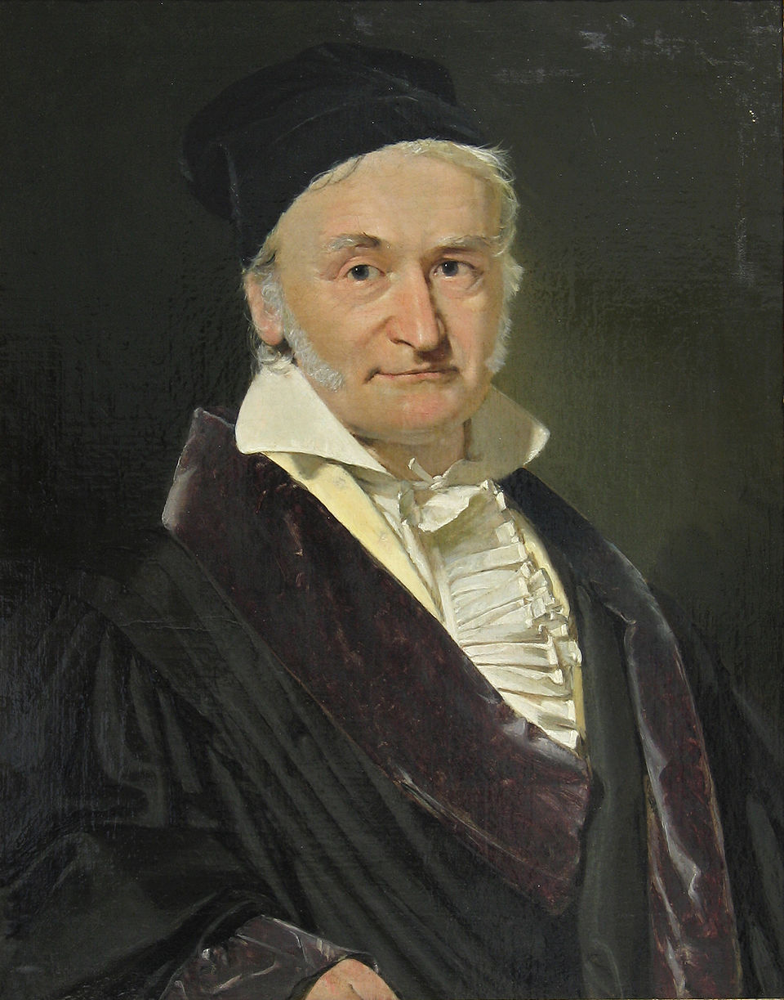
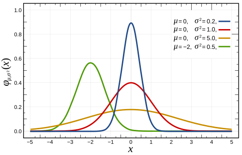
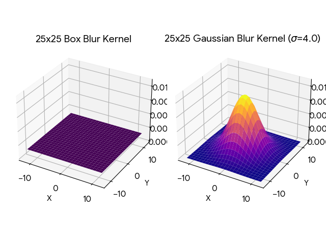
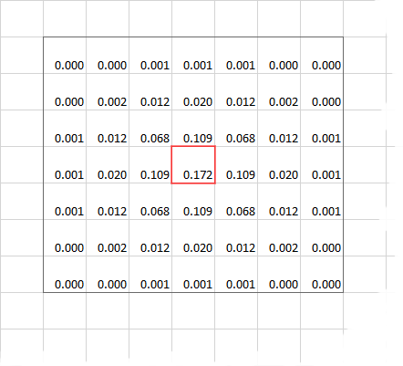
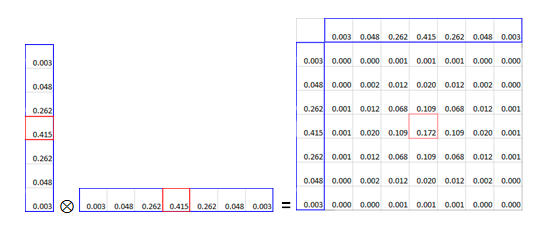
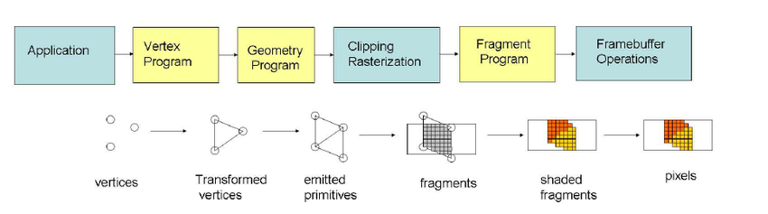

Porting Background Blur to the GPU
The problem:
This PR addresses an issue with the previous implementation of Background Blurring. It used too much memory space, as openCV contains huge builds for every possible memory architecture supported on Android. This leads to duplicate files, large amounts of unnecessary code, and a larger download size. The MediaPipe library and the .tflite file used for foreground-background detection was trivial in comparison. This is fixed by moving the entire blurring operation to openGL ES, a graphics framework that is built into Android, cutting out 100 MB from the build size while also increasing performance. This is done by the implementing Gaussian Blur algorithm from scratch in GLSL, the openGL Shader language.
The Research:
This is not a trivial task, as it involves the interop between MediaPipe, OpenGL, and the apps kotlin code to handle format conversion, perform advanced calculations, and prevent memory leaks. This blog will walk over the background knowledge needed to understand this PR. In it, I'll go over
- Gaussian Blur
- Linear Algebra Transformations
- The GPU Pipeline
- OpenGL
- OpenGL Shader language (GLSL)
- Putting it all together
Gaussian Blur
If you've ever taken a statistics class, you likely have worked with a normal distribution.
This a naturally occurring phenomenon of distribution that models many things in life
from test scores to insurance rates. These kinds of bell curve functions are known as
Gaussians and they were discovered by German Mathematician Carl Frederich Gauss, in the 1800s.
 |
 |
When working with computer images, you can think of an image as a 2d array, with each item in the array corresponding to a pixel in the image. The concept of blurring is simple, it simply requires setting each pixel equal to the average of it's surrounding pixels within a given bounds. This bounds is called the kernel, and it's usually represented as a matrix (we see more about that later)
Lets see a simple blurring algorithim, box blur, as you can see in 3 dimensions, it's equivalent to drawing a box over the each pixel and averaging all the pixels inside to set as the value of the target pixel, according to a flat constant weight.

Now let's look at Gaussian Blurring. Notice that instead of a box, it's the bell curve from previous. This intuitively is what Gaussian Blurring does, instead of a box over each pixel, it's calculating the blur weight based off the adjacent pixels position in a Gaussian distribution. Now a benefit of Gaussian Blurring is that the kernel (the bounds), is able to be split horizontally and vertically. This way instead of iterating O(N^2), it's O(N), a drastically faster improvement, for a clearer blurring quality! This is done through a Linear Algebra operation, known as Matrix Multiplication.
 |
 |
Linear Algebra Transformations
If you've were done grade school math, you would have likely worked on a system of linear equations.
That is, usually 2 or more equations with 2 or more variables, and the goal is to find the value of
each variable that satisfies all the equations.
System of Equations
Matrix Form (Ax = B)
This is where linear algebra gets it name, by representing the coefficients of linear equations in a matrix, like a 2d array, of which you can perform certain operations on these matrices to solve the equations. But it's value in computer graphics comes from the concept of transformations. These are operations performed upon the values of a matrix that are reversible. Operations that involve shifting the values by some distance or rotating the value according to some radian, or scaling the values according to some float. The magic is that the since the operations of reversible, there is no data loss from performing these operations. which makes them ideal for representing images, with the color of each pixel represented as an entry in the matrix.
Below are some of the common matrix multiplication operations to preform certain functions. In this writeup I'm interested mostly in the scaling and the rotation of 2D matrices.
Scales an object by sx and sy.
Rotates (Counter-clockwise) an object by angle θ.
The GPU Pipeline
Most of computer software runs on the CPU (Central processing unit) that runs the extensive calculations and memory shifting
operations that make modern computing possible. But this isn't the 60s anymore, we want information present on screens
in a convenient ease to access layout. This requires the use of graphics, displaying pixels in a certain order, to show information.
Early computers just did everything on the CPU, but later on, a dedicated chip was created to optimize graphics processing
operations. The GPU (Graphics Processing Unit) was born. Now on big computers, the GPU is given it's own dedicated card and peripherals
but on mobile phones, the GPU is located on the same card as the CPU, just in a different physical location.
A lot of modern graphics is taken for granted, but the underlying implementation is actually pretty complicated.
While on embedded machines, it's usually just writing to a magic memory address thats hardwired to the screen. In modern computing
we require the use of several intermediate stages from processing the raw data, to deciding how to interpet that data, to
performing operations on that data, that must run in parallel to take advantage of the multithreaded nature of GPU's.
As you might imagine, this is a huge pain to deal with, so we invented Graphics Libraries to make our lives (somewhat) easier.

OpenGL
OpenGL (Open Graphics Library) is a widely adopted, cross-platform API for rendering 2D and 3D vector graphics, enabling software to communicate directly with GPUs for high-performance,
hardware-accelerated rendering. Used in CAD, game development, virtual reality, and simulation, it acts as a standard interface, with specialized versions
like OpenGL ES for mobile/embedded devices and WebGL for browsers.
As mentioned before, GPU and CPU's exist in 2 different physical spaces. They have two different memory spaces
and different ways of accessing them. Because of this OpenGL has a lot of boilerplate, as it needs to manage 2 different memory spaces.
Therefore it operates a lot like a state machine under the hood, hence why we need to explicitly define
variables, bind those variables to memory in the gpu, activate/deactivate that memory, send/read data from
the GPU, and release memory after we're done using it. In addition, a lot of these functions have terrible
documentation, with vague naming, and unclear parameters.
OpenGL Shader language (GLSL)
If you've ever written code in C, you already know most of GLSL. It's a C style language
used to translate high level code into low level operations that the GPU can understand.
Understanding glsl, mostly comes down to understanding the the shading stage of openGL.
Basically, the keywords `in` and `out` refer to the entry and exit variable of the program.
There is no returning in glsl. In addition, each program runs in a multi threaded enviornment,
you can think of the main function having multiple instances of itself running at the same time.
Also depending on the version, certain system defined global variables like `gl_Position` can be
the exit variable as well.
#version 300 es
in vec4 a_Position;
in vec2 a_TexCoord;
out vec2 v_TexCoord;
void main() {
gl_Position = a_Position;
v_TexCoord = a_TexCoord;
}
Putting it all together
Previously, the PR already included the foundational work on using MediaPipe to perform a
foreground background detection on an image, and return a segmentation mask filter. This mask, is
really a matrix (2d array) of 1's and 0's, to represent if a pixel is marked foreground or background.
The Goal is to now leverage what we learned to apply this mask upon an image, blurring the background, but
keeping the foreground unblurred. This is done through several classes and helper libraries.
- `BackgroundBlurGPUProcessor` a file that handles the openGL logic, and acts as an abstraction over the inner workings of the image processing. OpenGL's logic is ... very unclear. I tried my best to document as much as possible, including any linear algebra that I had to perform.
- `background_blur_vertex` the required vertex shader, needed to identify the position of each pixel on the screen, before the geometry, rasterization, and fragment shader steps of the openGL pipeline.
- `gaussian_blur_frag_shader` the Gaussian Blur implementation, this is what actually performs the logic on the image pixels. The code is also somewhat unclear if you're not familiar with shaders or gaussian blur. It helps to read the technical article by Intel that I commented.
- `seg_mask_frag_shader` the masking operation implementation, very simple, just checking if the pixel should be blurred or retain it's original unblurred value
- `libyuv_android` a light weight helper lib for converting between image formats without the overhead of OpenCV
Result
The app build size decreased drastically from the previous implementation. Falling from 263 MB to just 128 MB
A 135 MB loss in APK size! In addition the performance of the frame processing increased as well, with noticably reduced choppiness and cleaner
blurring. Benchmarks are TODO
I've also included demo screenshots showing the segmentation mask on the right, and it's corresponding
use in the final outputed frame on the left.